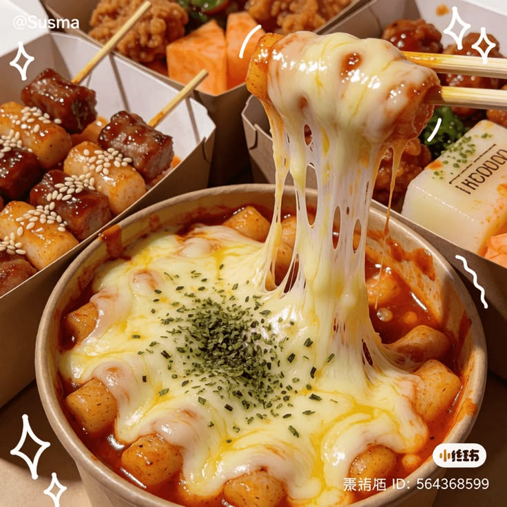

Eating Well on a Student Budget
Your first year is busy: new classes,new friends,and long days on
caampus.It is easy to skip meals or spend your whole allowance on milktea.
Eating regular,simple meals helps you focus in class,
and you do not need a big budget to do it.
Where to Eat Near Campus
You have more options than you think..Here are the usual go-to spots:
- The school canteen for quick rice meals between classes
- Carinderias outside the gate for cheap,filing ulan and rice
-
Street food vendors around the campus for quick and affordable snacks
- Your own baon from home, which is the cheapest choice of all
- Convenience stores for emergency snacks, not for every meal
How to Plan Your Weekly Food Budget
A little planning on Sunday saves you from being broke by Thursday.
- Check how much allowance you have for the whole week.
- Set aside money for fare and school needs first.
- Divide what is left by the number of school days.
- Pack baon on at least two days to stretch your budget.
- Keep a small amount for emergencies, like a surprise project
Quick tips
Always bring a refillable water bottle. Water stations on campus
are free, and you will save a lot compared to buying bottled drinks
everyday.

photo by:
ススマ ݁ ˖Ი𐑼⋆
Back to Home
Back to Enrollment Guide